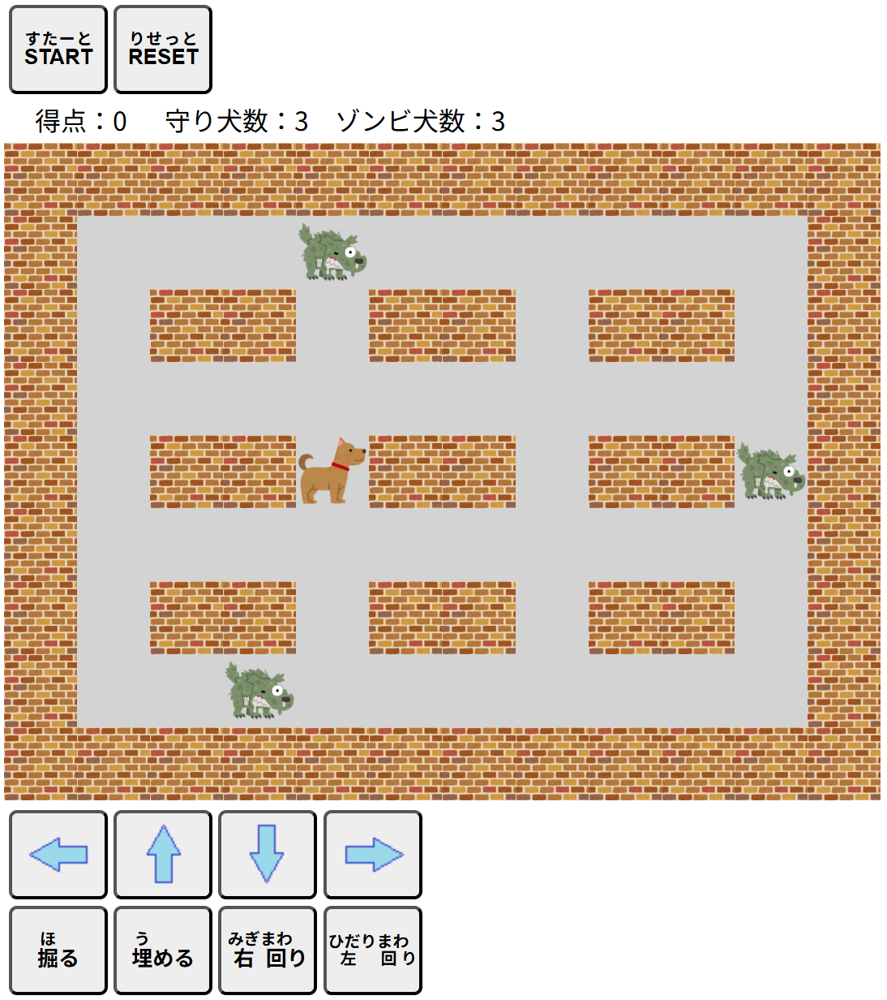

| 【平安京エイリアン】 |
|
プレーヤーである犬を操作し、敵であるゾンビ犬を穴を掘って埋めていくゲームです。いわゆる、平安京エイリアンです！  ・犬は直接的な攻撃手段はなく、「穴を掘る」「穴を埋める」の操作でゾンビ犬を退治します。 ・犬掘りは、Xキーを押すごとに最大5段階あります。穴を掘る場所は、犬の前（頭の方向）となります。 ・最大の大きさになったときのみ、ゾンビ犬を穴に落とすことができます。 ・犬を移動させずに、向きだけを変えたい場合には、Sキー（右回り）、またはAキー（左回り）を押します。 ・犬は穴の大きさに関わらず、穴の上を通ることはできません。 ただし、ゾンビ犬が最大穴以外の穴の上を通ると、その穴は消滅してしまいます。 ・ゾンビ犬は穴に落ちただけでは退治できず、穴を埋めて通路の状態に戻したときに初めて退治できます。 ・穴埋めは、Zキーを押すたびに最大5段階で穴を埋めます。 ・ゾンビ犬は穴に落ちてから一定時間経過すると這い上がって通路上に復活し、穴も消えてしまいます。 また、通路上の他のゾンビ犬と穴の中のゾンビ犬が接触すると、時間経過に関わらず一瞬で穴から救出されます。 ・犬がゾンビ犬に接触するとやられてしまい、プレーヤーの犬数が減ります。再開のエイリアンの数は、やられた直前の数です。 ・そのステージのすべてのエイリアンを退治するとステージクリアとなります。 Xキー：掘る Zキー：埋める Sキー：向き変更（右回り） Aキー：向き変更（左回り） 矢印キー：移動 同時に掘れる穴：最大10個 犬（プレーヤー）：3匹 [START]ボタンをクリック（タップ）するとそのステージが開始します。 ステージが変わっても犬数は3匹にはなりません。 |